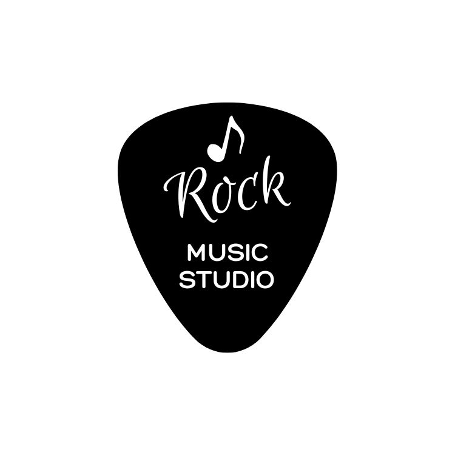

GoodBuy|Youtube Music-Rock Music, Rock ‘N’ Roll Recommendations

Rock music is one of the most influential and popular music genres since the mid-20th century. Its origins stem from a fusion of blues, country, and rhythm and blues music in the southern United States, characterized by its vitality, passion, and emotion. Over time, rock music evolved from a music genre into a cultural movement, influencing people’s lifestyles, fashion, and values.
The origins of rock music can be traced back to the early 1950s when American society was undergoing a period of change and upheaval. Teenagers were eager to express their thoughts and emotions, and rock music provided them with an outlet. Pioneers of rock music such as Elvis Presley, BB King, Little Richard, and Chuck Berry blended elements from different races and cultures to create a new musical style.
As time passed, rock music gradually branched out into various subgenres, including classic rock, psychedelic rock, and heavy metal. Iconic bands and musicians such as The Beatles, The Rolling Stones, The Doors, and Jimi Hendrix made significant contributions to the development of rock music.
Rock music is not just a musical genre but also a symbol of a cultural movement and way of life. It inspires people to express themselves bravely, pursue their dreams, and continues to influence music and culture worldwide. In this introduction, we will delve into the origins, history, prominent bands and musicians, and the significance of rock music in modern society.
History of Rock Music
The origins of rock music can be traced back to the early 1950s, with the fusion of blues, country, and rhythm and blues in the southern United States. Renowned pioneers of rock music include Elvis Presley, Buddy Holly, Little Richard, and Chuck Berry. These musicians combined the rhythms and inspirations of African-American music with elements of white music, creating a new musical style known as rock music.
Classification of Rock Music
Rock music encompasses a wide range of styles, including but not limited to:
- Classic Rock: Referring to the rock music style of the 1960s and early 1970s, featuring bands like The Beatles and The Rolling Stones.
- Psychedelic Rock: Known for its experimental and psychedelic musical style, with bands such as The Doors and Jefferson Airplane.
- Heavy Metal: Known for its intense guitar and drum rhythms, with bands like Metallica and Iron Maiden.
Rock music has become one of the most popular and widely disseminated music styles worldwide, with its influence continuing to this day.
World-renowned Rock Bands and Singers
- The Beatles: This British band rose to global prominence in the 1960s and is one of the most influential bands in rock music history. Their musical style ranges from rock and roll to pop to psychedelic.
- The Rolling Stones: Formed in the 1960s, this British band is known for its strong rhythms and rebellious attitude. Their music style includes blues rock, rock and roll, and rock.
- The Doors: This American band, formed in the late 1960s, is known for its unique sound and artistic style. Their music blends rock, blues, jazz, and psychedelia.
- Jimi Hendrix: This American guitarist is one of the greatest guitarists in rock music history, known for his skill and innovation. His music blends rock, blues, psychedelia, and soul.
Performance Characteristics of Rock Music
Rock music has several main performance characteristics:
- Strong Rhythm: Rock music typically features a strong and distinct rhythm, often with a four-beat rhythm. This rhythmic groove guides listeners to sway with the music, creating a strong sense of dynamics and rhythm.
- SElectric Guitar Solos: The electric guitar plays a crucial role in rock music, responsible not only for the melody but also for solo sections. Rock guitar solos are often highly technical and expressive, employing various techniques and effects to create diverse tones and effects.
- SPassionate Vocals: Rock music vocalists often perform with passion and power, with their voices carrying strong emotions and expressions. Sometimes, vocalists express emotions through shouting, screaming, or distortion, which is a unique expression in rock music.
- SPowerful Drum Beats: Drums are also essential instruments in rock music, providing strong rhythmic support and dynamics. Rock drum beats are typically clear and forceful, injecting powerful energy into the entire song.
In summary, the performance characteristics of rock music include its strong rhythm, electric guitar solos, passionate vocals, and powerful drum beats, all of which contribute to the unique and charismatic music style of rock music.
Exploring the history, genres, and renowned bands and singers of rock music showcases the diversity and influence of this music genre. For those who love music and rhythm, rock music is undoubtedly a must-have musical feast.
We’ve previously shared a YouTube music channel that has recently added some funk music tracks. Let’s enjoy them together. Due to YouTube’s music copyright policies, please find the link below and click to jump to YouTube to listen!


Other Music Genres
For those interested in music, you may also refer to previous articles to learn about introductions to other music genres.
Enjoy Better Music Experience
Want to enjoy a better music experience? You might want to check out the previous articles introducing speakers and headphones.